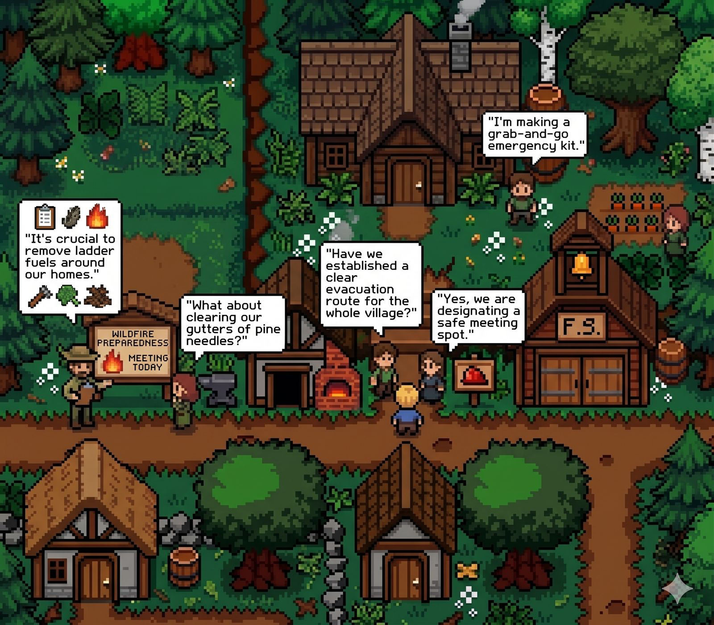
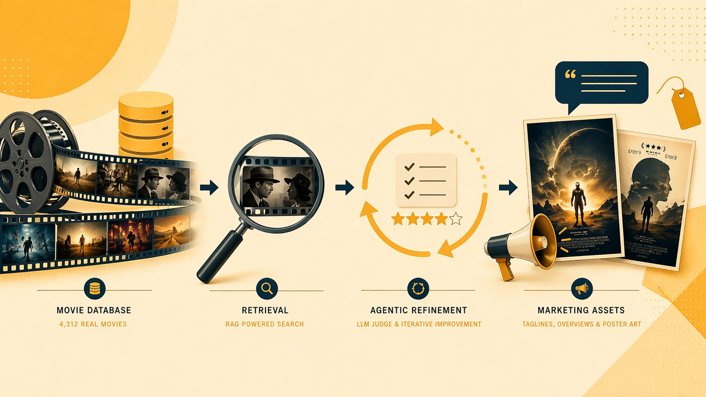

Final Project
Showcase
INFO 290: Fundamentals of Generative AI · Spring 2026
Date
Thursday, April 30, 2026
Time
11:00 AM – 2:00 PM
Location
South Hall, UC Berkeley
Agentic · Multimodal
VisionCart
A 4-agent LangGraph pipeline that turns a Pinterest-style vision board into ranked, live product results from real retailers.
TeamKurumi Kaneko · Quinton King · Raras Pramudita · Lance Santana
01 / 12
Music & Memory
Builds therapeutic playlists for dementia patients by grounding retrieval in the reminiscence bump, region, and life events.
TeamAnika Bhagavatula · Sunny Lee · Mabel Teo · Sejin Kim
02 / 12
Sub-3B Function-Calling SLMs
Teaches small language models to reliably call APIs through SFT with function masking, GRPO, and easy-to-hard curriculum learning.
TeamArnur Sabet · Assel Sakenkyzy · Diara Bagayeva · Meruyert Tastybay
03 / 12

Simulation · PolicyWildfire Mitigation
Agent-based simulation of Berkeley Hills homeowners deciding whether to harden their properties under shifting fire-risk policy.
TeamMadeleine Melcher · Amrita Nambiar · Samuel Robson · Sanjali Roy
04 / 12
Neuro-Orchestrator
Personalized AI coaching for AuDHD users — task decomposition and reminders shaped by prior plans and neurodivergent-focused prompting.
TeamDelvin Marimo · James Ning · Jaime Wong · Monica Zhao
05 / 12
Belly Button
A real-time conversational recommender that fuses live restaurant data with community sentiment to rank suggestions on the fly.
TeamSupakarn Bunlert · Gyuyeon Stella Jung · Jessie Deng · Tubal Theodros
06 / 12

RAG · CreativeMarketing Asset Gen
Generates film marketing taglines and poster art grounded in TMDB retrieval and sharpened by an LLM-as-Judge refinement loop.
TeamRyuichi Ikeda · Priya Charagondla · Shivani Parikh · Nseke Ngilbus · Lena Ehrenreich
07 / 12
UX Research RAG
Turns raw interview transcripts into traceable user stories and pain points, comparing ChromaDB vs. FAISS retrieval on the same corpus.
TeamAzad Jagtap · Vinay Thorat · Romit Kar · Arno Demarteau
08 / 12
LawLLM
A copyright-law research assistant that pits a FAISS-backed RAG pipeline against in-context case briefs — with human evaluation on both.
TeamSarah Algashgari · June Fang · Michelle Lin · Wendi Zheng
09 / 12
Rental Market Intel
A multi-agent researcher that scrapes live listings, cross-references market signals, and synthesizes investor-ready rental intelligence.
TeamAlex Endo · Minkush Jain · Avery Lee · Patrick Ruan
10 / 12
MacroMind
Nutrition tracking plus constraint-aware meal planning — respects macros, allergies, and pantry state when suggesting what to eat next.
TeamJyoti Divya · Pan Haoming · Lin Iyu · Baier Noah
11 / 12
Automated Librarian
A 5-modality RAG system — text, tables, images, audio, and video — unified so users can query any document type with one question.
TeamMichael Herrington · Shuai Meng · Victor Ngetich · Kevin Skinner
12 / 12